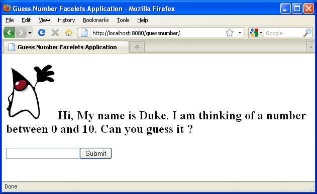

Developing a Simple Facelets Application
This section describes the general steps involved in developing a JavaServer Faces application.
Developing a simple JavaServer Faces application using Facelets technology, usually requires these tasks:
Developing the backing beans
Creating the pages using the component tags
Defining page navigation
Mapping the FacesServlet instance
Adding managed bean declarations
Creating a Facelets Application
The example used in this tutorial is the guessnumber application. The application presents you with a page that asks you to guess a number between 0 and 10, validates your input against a random number, and responds with another page that informs you whether you guessed the number correctly or incorrectly.
Developing a Backing Bean
In a typical JavaServer Faces application, each page of the application connects to a backing bean (a type of managed bean). The backing bean defines the methods and properties that are associated with the components.
The following managed bean class, UserNumberBean.java, generates a random number from 0 to 10:
package guessNumber;
import java.util.Random;
import javax.faces.bean.ManagedBean;
import javax.faces.bean.SessionScoped;
@ManagedBean
@SessionScoped
public class UserNumberBean {
Integer randomInt = null;
Integer userNumber = null;
String response = null;
private long maximum=10;
private long minimum=0;
public UserNumberBean() {
Random randomGR = new Random();
randomInt = new Integer(randomGR.nextInt(10));
System.out.println("Duke's number: " + randomInt);
}
public void setUserNumber(Integer user_number) {
userNumber = user_number;
}
public Integer getUserNumber() {
return userNumber;
}
public String getResponse() {
if ((userNumber != null) && (userNumber.compareTo(randomInt) == 0)) {
return "Yay! You got it!";
} else {
return "Sorry, " + userNumber + " is incorrect.";
}
}
public long getMaximum() {
return (this.maximum);
}
public void setMaximum(long maximum) {
this.maximum = maximum;
}
public long getMinimum() {
return (this.minimum);
}
public void setMinimum(long minimum) {
this.minimum = minimum;
}
}Note the use of the @ManagedBean annotation, which registers the backing bean as a resource with JavaServer Faces implementation. The @SessionScoped annotation registers the bean scope as session.
Creating Facelets Views
Creating a page or view is the responsibility of a page author. This task involves adding components on the pages, wiring the components to backing bean values and properties, and registering converters, validators, or listeners onto the components.
For the example application, XHTML web pages serve as the front end. The first page of the example application is a page called greeting.xhtml. A closer look at various sections of this web page provides more information.
The first section of the web page declares the content type for the page, which is XHTML:
<!DOCTYPE html PUBLIC "-//W3C//DTD XHTML 1.0 Transitional//EN" "http://www.w3.org/TR/xhtml1/DTD/xhtml1-transitional.dtd">
The next section declares the XML namespace for the tag libraries that are used in the web page:
<html xmlns="http://www.w3.org/1999/xhtml"
xmlns:h="http://java.sun.com/jsf/html"
xmlns:f="http://java.sun.com/jsf/core">The next section uses various tags to insert components into the web page:
h:head>
<title>Guess Number Facelets Application</title>
</h:head>
<h:body>
<h:form>
<h:graphicImage value="#{resource['images:wave.med.gif']}"/>
<h2>
Hi, my name is Duke. I am thinking of a number from
#{userNumberBean.minimum} to #{userNumberBean.maximum}.
Can you guess it?
<p></p>
<h:inputText
id="userNo"
value="#{userNumberBean.userNumber}">
<f:validateLongRange
minimum="#{userNumberBean.minimum}"
maximum="#{userNumberBean.maximum}"/>
</h:inputText>
<h:commandButton id="submit" value="Submit"
action="response.xhtml"/>
<h:message showSummary="true" showDetail="false"
style="color: red;
font-family: 'New Century Schoolbook', serif;
font-style: oblique;
text-decoration: overline"
id="errors1"
for="userNo"/>
</h2>
</h:form>
</h:body>Note the use of the Facelets HTML tags (those beginning with h:) to add components, and the Facelets core tag f:validateLongRange to validate the user input. An inputText component accepts user input and sets the value of the backing bean property userNumber through the EL expression #{userNumberBean.userNumber}. The input value is validated for value range by the JavaServer Faces standard validator f:validateLongRange.
The image file, wave.med.gif, is added to the page as a resource. For more details about the resources facility, see Resources.
A commandButton component with the ID submit starts validation of the input data when a user clicks the button. Using implicit navigation, the component redirects the client to another page, response.xhtml, which shows the response to your input.
You can now create the second page, response.xhtml, with the following content:
<!DOCTYPE html PUBLIC "-//W3C//DTD XHTML 1.0 Transitional//EN"
"http://www.w3.org/TR/xhtml1/DTD/xhtml1-transitional.dtd">
<html xmlns="http://www.w3.org/1999/xhtml"
xmlns:h="http://java.sun.com/jsf/html">
<h:head>
<title>Guess Number Facelets Application</title>
</h:head>
<h:body>
<h:form>
<h:graphicImage value="#{resource['images:wave.med.gif']}"/>
<h2>
<h:outputText id="result" value="#{userNumberBean.response}"/>
</h2>
<h:commandButton id="back" value="Back" action="greeting.xhtml"/>
</h:form>
</h:body>
</html>
Configuring the Application
Configuring a JavaServer Faces application involves various tasks which include adding managed-bean declarations, navigation rules, and resources bundle declarations in the application configuration resource files such as faces-config.xml, and mapping the Faces Servlet in the web deployment descriptor file such as a web.xml file.
If you are using an IDE such as NetBeans IDE, a web deployment descriptor file is automatically created for you. In such IDE created web.xml file, change the default greeting page, which is index.xhtml, to greeting.xhtml. Here is an example web.xml file:
<?xml version="1.0" encoding="UTF-8"?>
<web-app version="3.0" xmlns="http://java.sun.com/xml/ns/javaee"
xmlns:xsi="http://www.w3.org/2001/XMLSchema-instance"
xsi:schemaLocation="http://java.sun.com/xml/ns/javaee
http://java.sun.com/xml/ns/javaee/web-app_3_0.xsd">
<context-param>
<param-name>javax.faces.PROJECT_STAGE</param-name>
<param-value>Development</param-value>
</context-param>
<servlet>
<servlet-name>Faces Servlet</servlet-name>
<servlet-class>javax.faces.webapp.FacesServlet</servlet-class>
<load-on-startup>1</load-on-startup>
</servlet>
<servlet-mapping>
<servlet-name>Faces Servlet</servlet-name>
<url-pattern>/faces/*</url-pattern>
</servlet-mapping>
<session-config>
<session-timeout>
30
</session-timeout>
</session-config>
<welcome-file-list>
<welcome-file>faces/greeting.xhtml</welcome-file>
</welcome-file-list>
</web-app>Note the use of context parameter PROJECT_STAGE. Project stage is a parameter identifying the status of a JavaServer Faces application in the software lifecycle.
The stage of an application can affect the behavior of the application. For example, if the project stage is defined as Development, debugging information is automatically generated for the user. If not defined by the user, the default project stage is considered as Production.
Building, Packaging, Deploying, and Running the guessnumber Facelets Example
The example Facelets application described in this chapter can be built, packaged, and deployed using the NetBeans IDE with Java EE 6 SDK. For details on how to obtain this software and configure your environment to run the examples, see Chapter 2, Using the Tutorial Examples. The source code for this example is available in the tut-install/examples/web/guessnumber directory.
To Build, Package, and Deploy the guessnumber Example Using NetBeans IDE
Follow these instructions to build, package, and deploy the guessnumber example to your GlassFish Server instance using NetBeans IDE.
- In NetBeans IDE, select File→Open Project.
- In the Open Project dialog, navigate to the tut-install/examples/web/ directory.
- Select the guessnumber folder.
- Select the Open as Main Project check box.
- Click Open Project.
- In the Projects tab, right-click the guessnumber project and select Deploy.
This option builds and deploys the example application to your GlassFish Server instance.
To Build, Package, and Deploy the guessnumber Example Using Ant
To build, package, and deploy the guessNumber application using Ant, follow these steps.
- From a terminal window or command prompt, change to the tut-install/examples/web/guessnumber/ directory.
- Type the following command:
ant
This command calls the default target, which builds and packages the application into an WAR file, guessnumber.war, that is located in the dist directory.
- Make sure the GlassFish Server is started.
- To deploy the application, type the following command:
ant deploy
To Run the guessnumber Example
To run the guessnumber example, follow these steps.
- Open a web browser.
- Type the following URL in your web browser:
http://localhost:8080/guessnumber
The web page shown in Figure 5-1 appears.
Figure 5-1 Running the guessnumber Application
 - In the text field, type a number from 0 to 10 and
click Submit.
Another page appears, reporting whether your guess is correct or incorrect.
- If you guessed incorrectly, click the Back button to return to the main
page.
You can continue to guess until you get the correct answer.
To Undeploy the guessnumber Example Using NetBeans IDE
To undeploy guessnumber.war using NetBeans IDE, follow these steps.
- Click the Runtime tab.
- Expand the Servers node and locate the GlassFish Server instance to which you deployed guessnumber.
- Expand your GlassFish Server instance node, then Applications.
- Right-click guessnumber and select Undeploy.
To Undeploy the guessnumber Example Using Ant
To undeploy guessnumber.war using Ant, type the following command:
ant undeploy